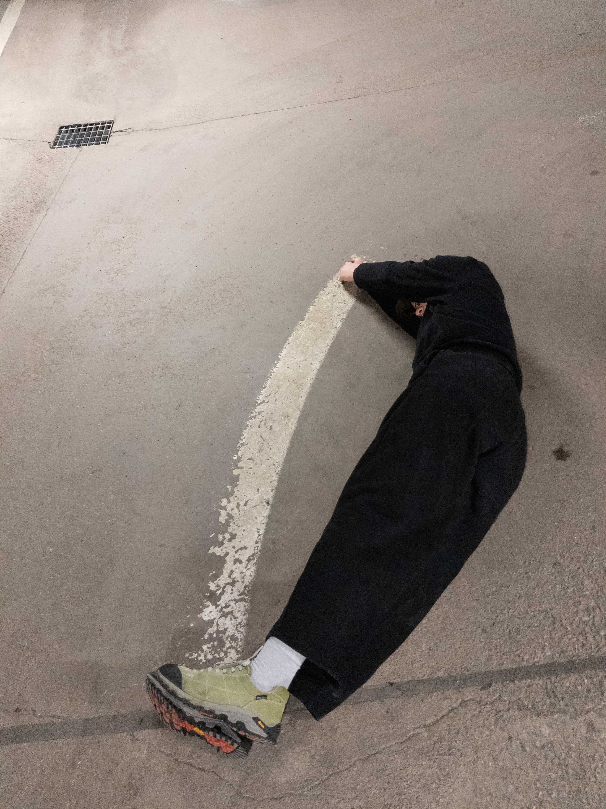
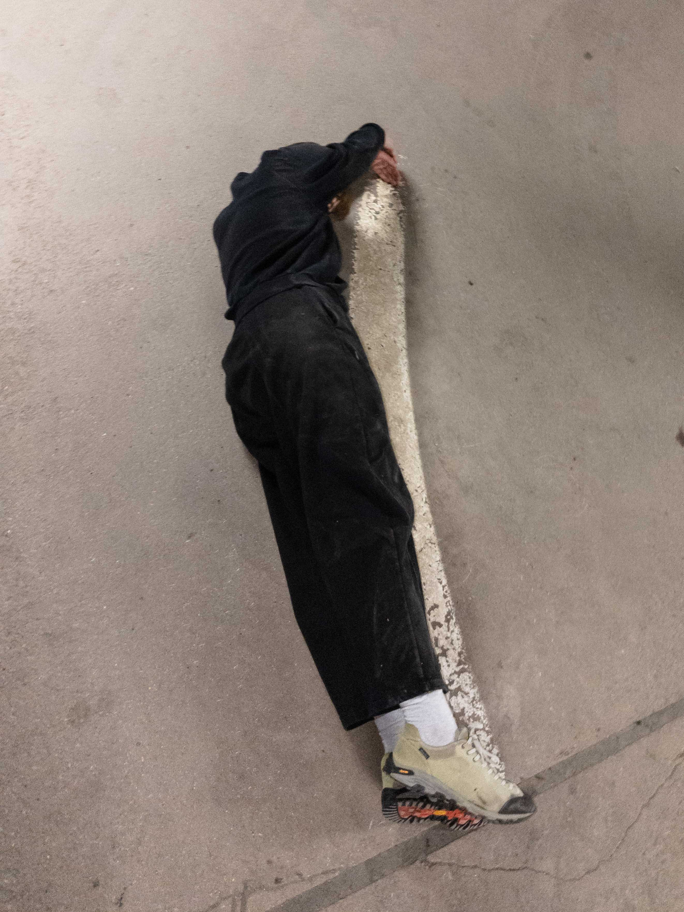
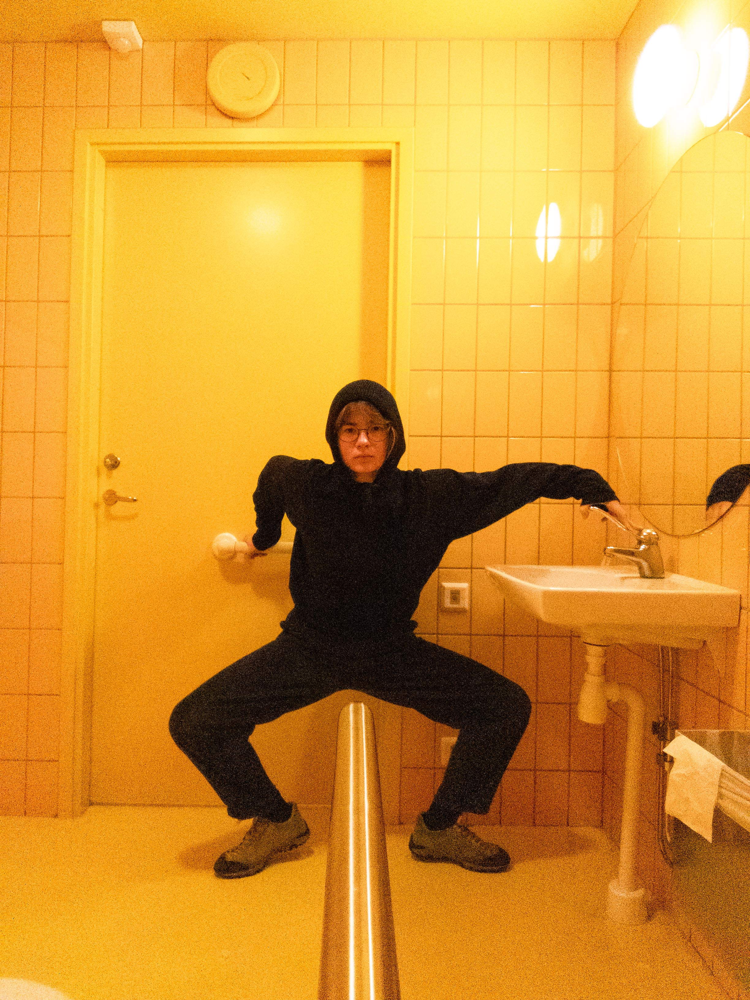
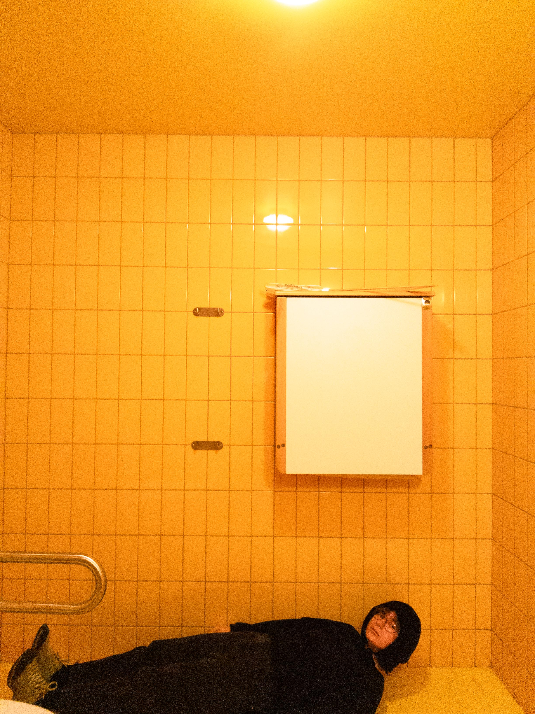

with stone
2024, Tenerife
interaction with stone (1), documented with the help of Bogdan


interacting with cotton
2025, Re:Search:Gallery, Groningen
see i give myself space
with lines
2025, Sweden
interaction with parking lot painted lines, documented with the help of Sophie
I think out loud with painted lines on the ground, for their immediate appearance as lines and their proportion to our shared scale, they can be seen as bodies next to ours. They delineate space, instruct us on movement. The lines are of communication. The curiosity lies in how this interaction affects our perception of, and movement within space; in how these lines transform the aesthetic of our days. They are often not seen, for it is expected they would be there anyways, but there is rhythm in a cross path. It is a structural visual language built on our behaviour. It is either parallel or perpendicular to intuitive movement. It is parallel as an arrow indicating the way; Perpendicular, referencing either the implied restriction of movement to a certain area, or the visual contrast (texture) created by signifying lines, as for cut lines indicating parking spaces.


toilet images
2025, Denmark
interaction with toilet


interacting with snow
2025, Groningen
deliniating personal space (2) with snow
my island like border
2025, São Miguel
deliniating personal space (1) with stick and sand, documented with the help of Ana
Between walkable land and the next foreseeable land there is water, we can choose to see it as something which links the two pieces of terrain, or as a separator of the two. It is possible to face our body as that of an island, one moving with a tide. There is a similar reduction to be made, that of the body, that of the space around the body, and that of the place where it is situated.
A relationship between these three notions is to be understood as one, as you and myself, as they are. In the same manner water reflects on to the land, our environment is reflected on to us, through our bodies.
with and in stone
2024, Tenerife
interaction with stone (2), documented with the help of Bogdan
with stone
2024, Tenerife
interaction with stone (1), documented with the help of Bogdan
as a body
2024, +SIGN, Groningen
occupying an empty project, exhibition space.
a special thank you to Marie-Jeanne & Ron for allowing their space to be occupied, as i
interpreted a body as
an object as
an artwork.


making part
2021, Graciosa
selected interactions with landscapes, documented with the help of Filipe
a series of actions, and photographs, born out of the need of being engulfed by a landscape
thinking of planes through the vacation image, where there is a clear hierarchy between the subject and its background. seems, a distancing of the person from its environment - a separation of parts